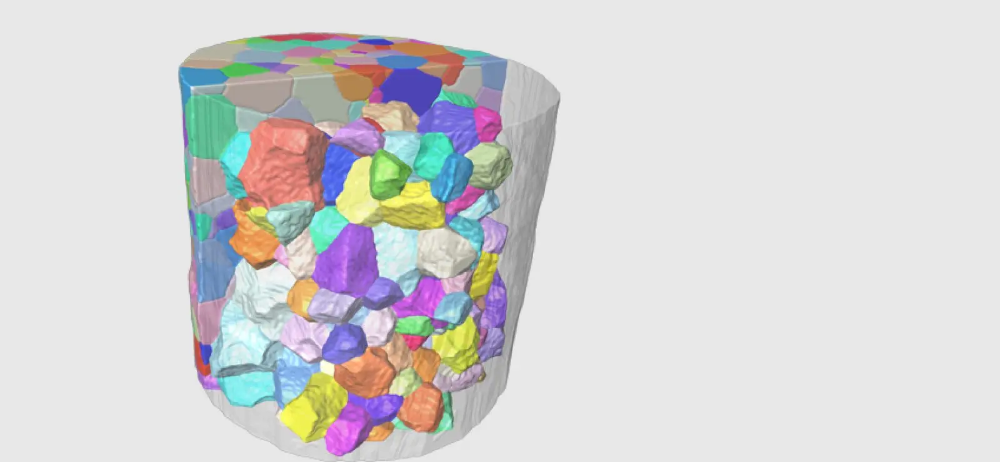
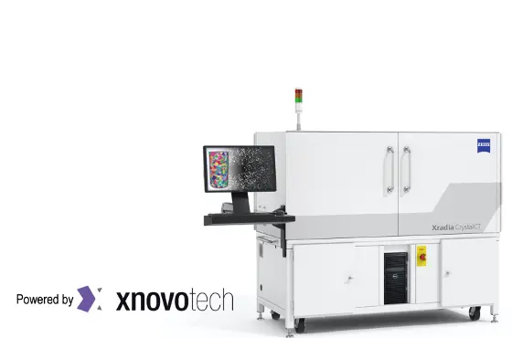

The GrainMapper3D™ Crystallographic Imaging Software version 3.2
The GrainMapper3D software provides non-destructive 3D crystallographic imaging through LabDCT™ and LabDCT Pro™ on ZEISS Xradia 520/620 Versa and ZEISS Xradia CrystalCT™ X-ray microscopes made for laboratory use.
Enjoy the simple and intuitive user interface of GrainMapper3D in your home laboratory
- 3D crystallographic imaging is always available with your private LabDCT. You do not have to book time months ahead for experiments or analysis – unlike at the synchrotrons.
- The intuitive GrainMapper3D software provides instant visual feedback on your data quality, reconstruction progress and grain map fidelity.
- Non-destructive testing makes 4D studies possible: the measurements leave the sample intact, permitting you to repeat analysis of the same material and study for instance annealing or exposure to external stimuli like mechanical loading or environmental conditions.
- The software allows correlation of absorption and diffraction data to study cracks, defects, or inclusions in the material as well as grain morphology, orientation, and rotation.
- GrainMapper3D is versatile, supports all crystal symmetries, and has successfully been applied to a wide range of materials including: metals, minerals, ceramics, and pharmaceuticals.
- The Advanced Acquisition strategies enable seamless data acquisition and reconstruction for grain mapping of longer, larger, high-aspect ratio samples.

tekst